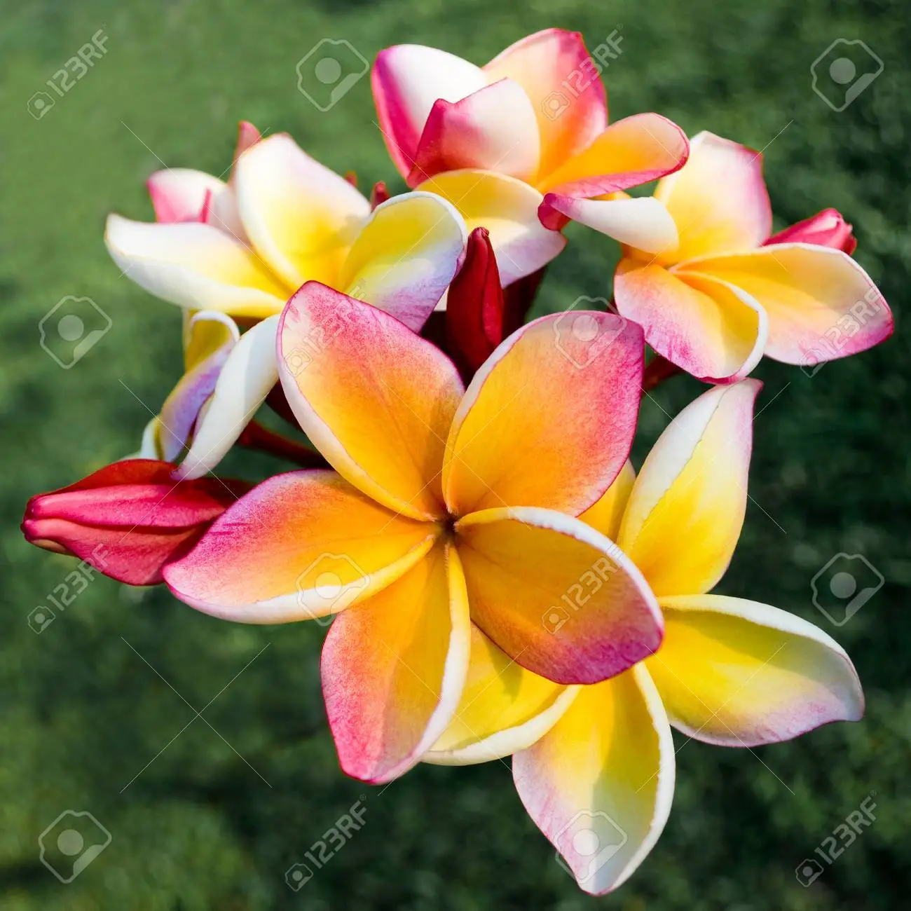

A rose is a woody perennial flowering plant of the genus Rosa, in the family Rosaceae, or the flower it bears. There are over three hundred species and tens of thousands of cultivars. They form a group of plants that can be erect shrubs, climbing, or trailing, with stems that are often armed with sharp prickles.
Famous for their appearance in Hawaiian leis, white frangipani adds a burst of tropical flair to the garden and has a pleasant floral fragrance. Their plump, soft, five petals partially overlap each other and gently swirl outward, giving these blooms a sculpted appearance. White frangipani has a soft yellow center that fades to pure white near the tips of the flower. Also known as a white plumeria, West Indian Jasmine, or nosegay1, this tree has thick, gray-green, succulent branches and long, leathery green leaves. The tree often forms into an umbrella shape. Though they can grow to be quite large, white frangipanis are slow growers. They can be kept in pots for easy moving and to keep them more compact.
